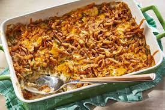

Best Green Bean Casserole

A green bean casserole makes the Thanksgiving holiday complete, and this version can be on the table in no time at all thanks to just four ingredients from your pantry or fridge: canned green beans, condensed mushroom soup, French-fried onions, and shredded Cheddar cheese.
This green bean casserole is truly the best. Made with just four budget-friendly ingredients, you'll come back to this green bean casserole recipe year after year.
ingredients
- 2 (14.5 ounce) cans green beans, drained
- 1 (10.5 ounce) can condensed cream of mushroom soup
- 1 cup shredded Cheddar cheese, divided
- 1 (6 ounce) can French-fried onions
Steps
- Preheat the oven to 350 degrees F (175 degrees C).
- Mix green beans and condensed soup together in a large microwave-safe bowl until well combined. Microwave on high until warm, 3 to 5 minutes.
- Stir 1/2 cup Cheddar cheese into the green bean mixture. Microwave on high for 2 to 3 minutes.
- Transfer mixture to a casserole dish and spread evenly over the bottom. Sprinkle French-fried onions over top, then sprinkle with remaining Cheddar.
- Bake in the preheated oven until cheese is melted and the onions are just turning brown, about 10 minutes.